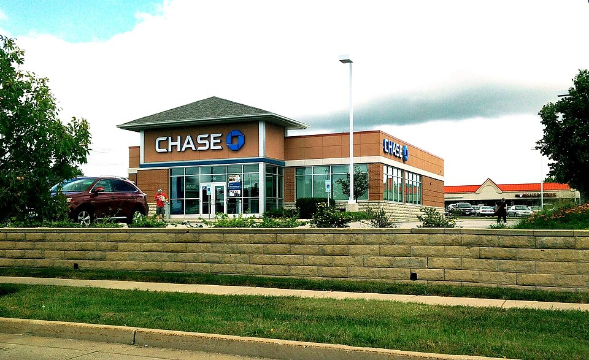

설립연도
1799년 (뿌리 회사 맨해튼 컴퍼니)

자산 규모로 미국에서 가장 큰 은행이에요. 개인 고객에게는 "체이스" 은행과 신용카드로, 기업과 정부에는 JP모건이라는 이름으로 투자은행·자산운용 서비스를 제공해요. 2006년부터 제이미 다이먼이 CEO를 맡아 왔고, 2026년 6월 후계 후보로 공동 사장 두 명을 세웠어요.
칸에 마우스를 올리거나 누르면 자세한 설명을 볼 수 있어요.

"체이스"라는 이름으로 미국 전역에 수천 개의 지점을 두고 예금, 대출, 신용카드 서비스를 해요. JP모건 매출에서 가장 큰 부분 중 하나예요.
대표 예체이스 은행, 체이스 신용카드
기업의 인수합병을 자문하고, 기업이 주식·채권을 발행해 돈을 모을 수 있게 도와줘요. 이 분야 세계 1위권이에요.
대표 예인수합병 자문, 주식·채권 발행, 트레이딩
부유한 개인과 연금·기관의 돈을 맡아 운용해요.
대표 예JP모건 자산운용, 프라이빗 뱅킹
기업에 돈을 빌려주고, 전 세계 기업들의 송금과 결제를 처리해요.
대표 예기업 대출, 결제·송금
원화 금액은 1달러 = 1,339.4원(2026년 11월 20일 유럽중앙은행 기준환율)으로 환산한 대략적인 값이에요.
| 기간 | 순영업수익 | 순이익 |
|---|
은행은 물건을 팔지 않아서 "매출" 대신 이자 이익과 수수료 등을 합친 "순영업수익"을 써요. 또 일반 회사처럼 영업이익을 따로 공시하지 않아서 순영업수익과 순이익만 보여드려요.
사업마다 겨루는 상대가 달라요